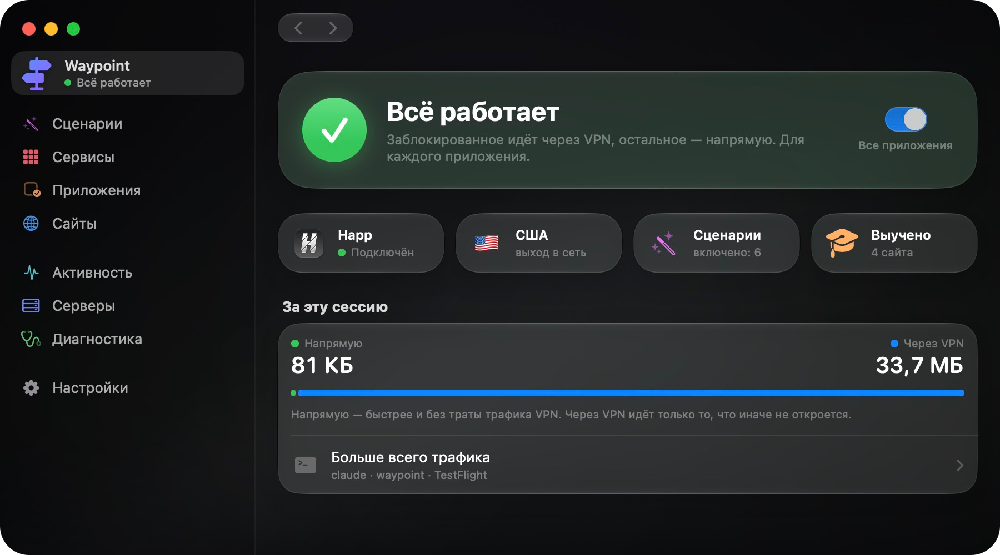
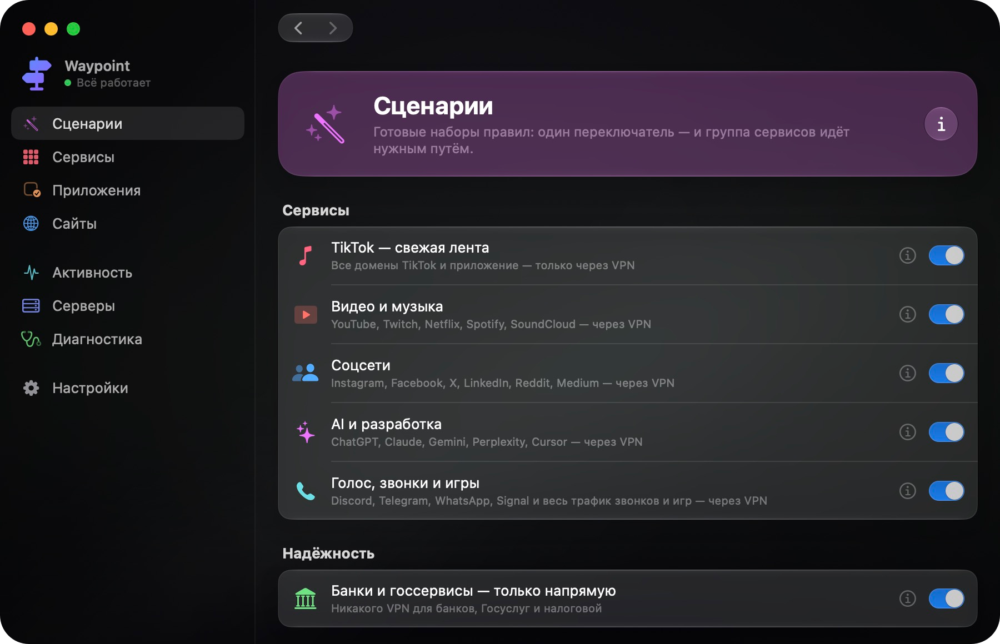
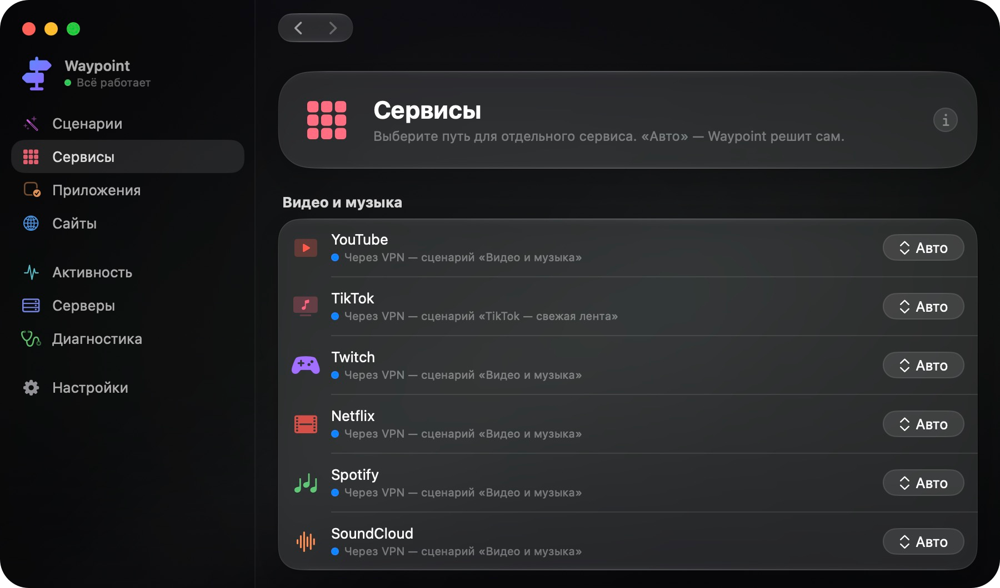
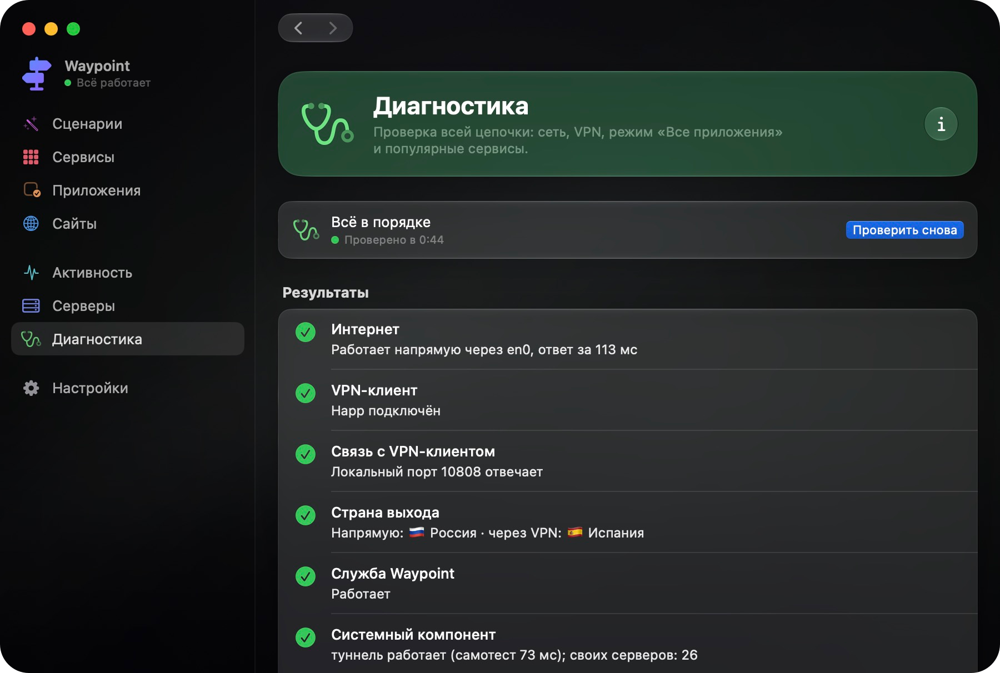
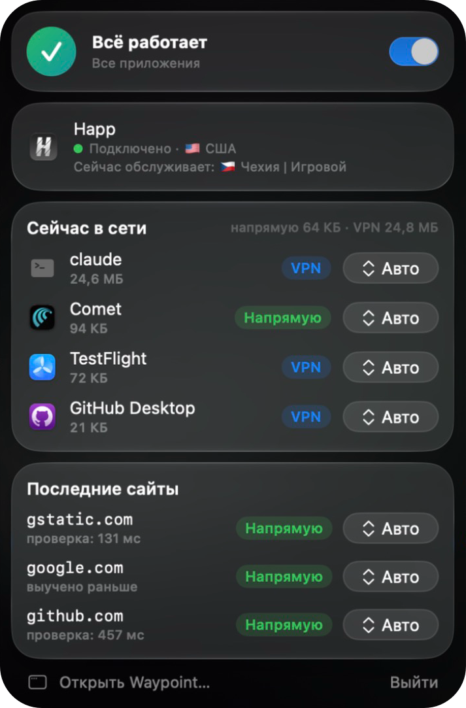
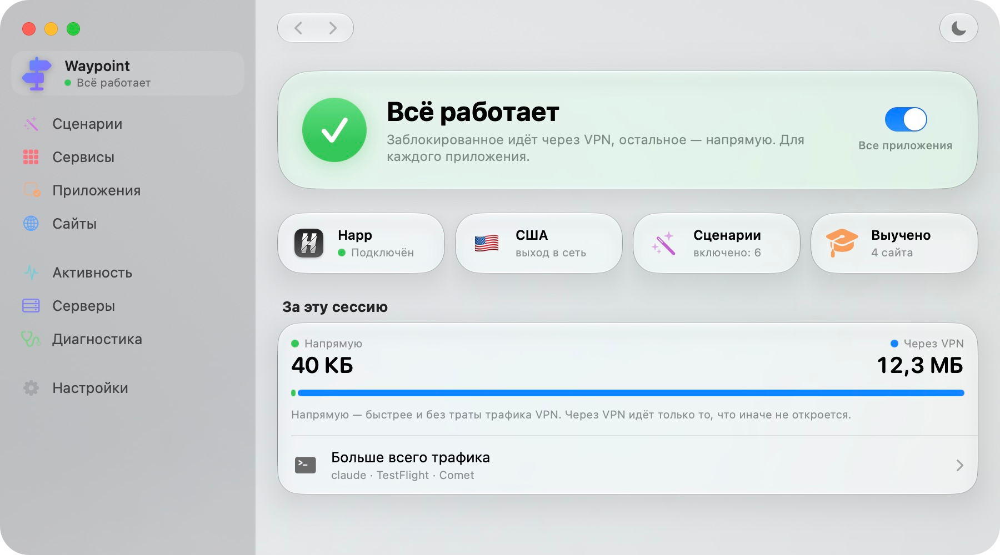

VPN only where you need it
The app decides by itself which sites and apps go through your VPN and which go direct. Blocked sites open, and your bank and local services keep working.
.dmg image · Apple Silicon Mac, macOS 14 or later · free and open source · interface in Russian

Why
A regular VPN is all or nothing
With the VPN on, your bank and government sites see a foreign address and may refuse to work. Turn it off, and blocked sites stop opening. Waypoint picks the path separately for every connection.
- sberbank.ruVPNforeign address, the bank may refuse
- gosuslugi.ruVPNforeign address, sign-in may fail
- youtube.comVPN
- telegram.orgVPN
- github.comVPN
- sberbank.ruDirect
- gosuslugi.ruDirect
- youtube.comVPN
- telegram.orgVPN
- github.comDirect
An example from Russia, where the app was made. Which sites are blocked depends on your provider; Waypoint finds out by itself and remembers.
Rule sets
Turn a set on and the rules just work
For example, all of TikTok goes through the VPN so the feed is not region-locked, while banks stay direct. There are sets for video, social networks, calls, AI tools and public Wi-Fi.

Your own rule
A path for any service, app or site
Choose: through the VPN, direct, blocked, or through one particular server. “Auto” means Waypoint decides.
It even works for an app and site pair: for example, all of Discord through the VPN, but one of its addresses direct.

Diagnostics
One-button check
Waypoint walks the whole chain: internet, VPN, exit country, popular sites, TikTok, Telegram and Discord. If something is wrong, it says what exactly and what to do about it.

In the menu bar
Everything important at hand
The Waypoint icon lives in the menu bar at the top of the screen. You do not have to open the app window.
- Turn it on or off with one switch
- Which apps are online right now and which path they take
- Recent sites and why that path was chosen
- Change the path for an app or a site in two clicks

Appearance
Light and dark theme
Switch with one button in the corner of the window, or follow the system.

More
Good to know
Every app
Not just the browser: Telegram, Discord and games too.
Unknown sites
It tries direct first. If the site does not open, it retries through the VPN and remembers.
Provider subscriptions
Paste the link and the server list keeps itself up to date. Waypoint checks which servers work and picks the fastest.
If something breaks
If the VPN drops or the app is closed, the internet works as usual. Links and servers are stored only on your Mac.
Install
Three steps
You need a VPN client that is already on your Mac, for example Happ. Waypoint works on top of it.
- Download the image. The file
Waypoint-…-macos-arm64.dmgis on the releases page. Open it and drag Waypoint to Applications. A.zipis there too if you prefer it. - Remove the macOS block. The app is not signed with an Apple certificate, so the system blocks it. Run this once in Terminal:
xattr -dr com.apple.quarantine /Applications/Waypoint.app - Open Waypoint. Its icon appears in the menu bar. To make it work with every app, press the Install button (“Установить”) on the main screen and enter your Mac password. This is done once.
Or build it yourself:
git clone https://github.com/Zent0rn0/Waypoint.git
cd Waypoint
scripts/fetch-vendor.sh
scripts/bundle.shLimits
What it cannot do
- It does not manage or read the VPN client’s own servers. To Waypoint the client is one of the paths traffic can take.
- If a site itself refuses you, rather than your provider, that cannot be detected automatically. Such services are listed in advance in the rule sets.
- Discord voice and games go direct by default. To send them through the VPN, turn on the “Voice, calls and games” set.
- Not tested: switching Wi-Fi, sleep and wake, very long sessions.
FAQ
The short answers
Is this a VPN?
No. Waypoint does not encrypt anything itself and provides no servers. It decides what to send through your VPN and what to let go direct. You need a VPN client you already have, or a subscription link from a provider.
Why does it need my Mac password?
Once, to install the system part: without it the app can only work with the browser, not with every app. The password is asked by a macOS dialog; Waypoint never sees or stores it.
Why does macOS say the app is damaged or from an unknown developer?
The app is not signed with a paid Apple certificate. That does not mean something is wrong with it: the code is open, you can read it and build it yourself. The command in the Install section removes the block.
What if Waypoint hangs or I quit it?
The internet keeps working as usual, just without path selection. The system part switches itself off on any failure and then tries to come back.
Are my servers or subscription link sent anywhere?
No. They stay on your Mac. Waypoint contacts the subscription provider to download the server list, and the servers themselves. Nowhere else.
Does it run on Intel Macs?
The ready-made build is for Apple Silicon only (M1 and later). You can try building it from source on Intel, but that has not been tested.
Is the app in English?
Not yet. The interface is in Russian for now; this page and the screenshots show what each screen does.
How do I uninstall it?
In the app open Settings (“Настройки”), find the system component (“Системный компонент”) and press Remove (“Удалить…”). Then move Waypoint from Applications to the Trash.
Give it a try
Installing takes a couple of minutes. If you do not like it, it uninstalls cleanly.